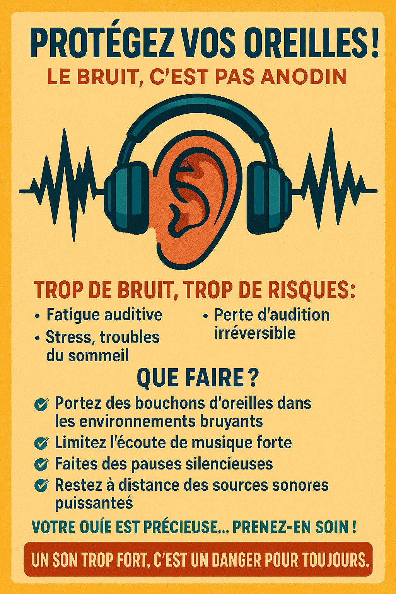

Introduction
Le son peut avoir des effets néfastes sur notre santé et notre bien-être, notamment lorsqu'il est trop fort ou constant.
Effets sur la santé
- Perte auditive
- Stress et anxiété
- Troubles du sommeil
- Problèmes cardiovasculaires
Galerie

Exposition à des niveaux sonores élevés.
Protection auditive en milieu bruyant.
Les effets du bruit sur la santé mentale.
Comment se protéger
- Utiliser des bouchons d'oreilles
- Éviter les environnements bruyants
- Faire des pauses dans un environnement calme
- Limiter le volume des écouteurs